Getting Started
LemmaLoom includes an example project called “Climate Debate”. You can import it to try out the application’s tools. Most of this guide draws its examples from it. Its op-eds, columns, and speech are fiction, as are its report and its recorded radio debate. Any resemblance to real persons or publications is coincidental, and the texts represent no one’s opinions and aren’t meant to persuade you of anything.
To add this example project to your library as a new project, select File ▸ Import ▸ Example Project. An Importing Example Project dialog displays the status. Once it closes, “Climate Debate” will become your active project. The language of the imported project depends on the current language of LemmaLoom’s interface, meaning it could either be English, German, or Mainland Simplified Chinese. Refer to Supported languages under Chapter 1, Introduction to know how to switch the interface language. All the documents, document sets, codes, attributes, and saved queries mentioned in this chapter exist in the imported project.
Alternatively, you may proceed through the examples with a few texts of your own; instead of referring to the documents included in “Climate Debate”, refer to yours.
Starting LemmaLoom for the first time
Upon initial launch, the LemmaLoom application window displays three columns (the navigation sidebar, the reading area, and the inspector). While there are no existing projects, both the navigation sidebar and the inspector remain blank. Likewise, until a project has been created and a document opened, the four tab icons at the top of the inspector are disabled. You may access all settings of the application via LemmaLoom ▸ Settings… (⌘,).
Two settings to check before you start are configured through General. First among these is the Theme setting, which applies the chosen color scheme throughout LemmaLoom’s user interface. Theme can either follow the light or dark appearance selected on the Mac system (System), or be overridden by Cream, High Contrast Dark, or another theme.
Interface language determines both the display language used by LemmaLoom and the language of the example project when it is imported. With System Default, Interface language matches the language on your Mac; other languages available are English, Deutsch, and 简体中文 (Mainland Simplified Chinese). Any changes made in Interface language take effect once the application is closed via Quit LemmaLoom below the menu and relaunched.
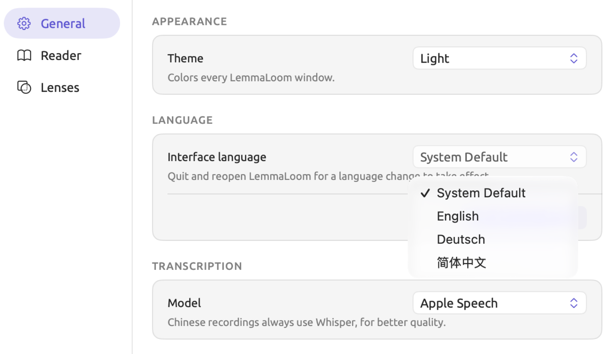
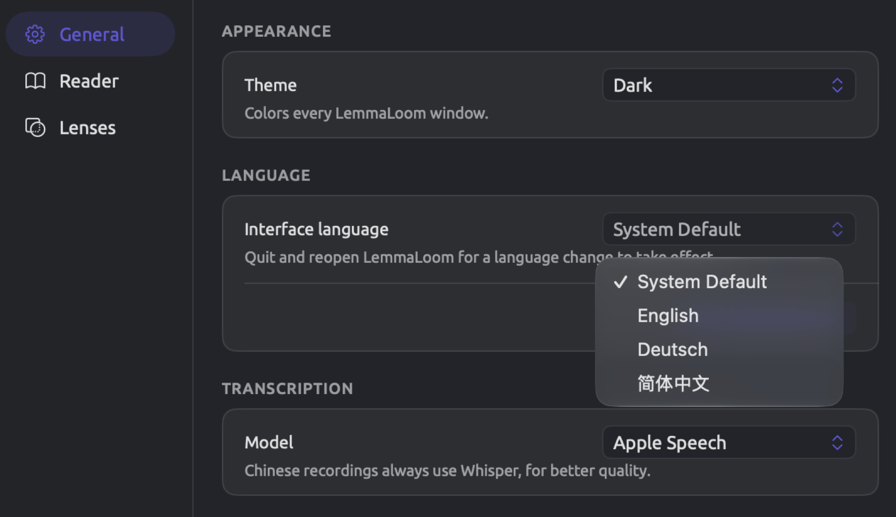
Within the Settings window, General also holds the speech recognition Model for recordings and the Exclusion Presets for import dialogs. Other sections include Reader (settings that control text styles in the reader) and Lenses, where you can customize the lens styles. Chapter 24, Settings and Appearance goes through the Settings window option by option.
Only documents written in English, German, or Chinese are analyzed for grammar. A document in any other language can be imported as plain text and still be read, coded, and searched. If a document written in another language needs grammar analysis performed on it, a translation to English, German, or Chinese would need to be analyzed instead. The analysis would then reflect grammatical structures present in the translation. Chapter 9, Translations and Split View explains further how to manage translations within LemmaLoom.
For brief explanations of various terms used in the application, visit Help ▸ Glossary. The Glossary window can remain open while you work in the main window.
How LemmaLoom organizes work
Your library contains everything you do within LemmaLoom. The library is essentially just a folder stored on your Mac computer. More details are discussed further in Where work is stored below.
Each study gets a project of its own inside the library. A project holds the texts you’re studying. It also holds whatever you make as you analyze them. It keeps your codes and their codings, your memos and links, and your sets and groups. Dictionaries and saved queries are kept there too. Projects are kept apart. A query run over a project only sees that project’s documents. Generally, you want to keep all relevant material for a study in a single project.
Three things are shared by every project. Tags come from the same list, accessible via Window ▸ Tags. Queries saved for All Projects are accessible from all projects; moreover, you may also query multiple projects simultaneously. Working across projects in Chapter 3, Projects and Documents covers how to accomplish such actions. Analyzers you develop for LemmaLoom consist of small scripts that annotate your passages. Such analyzers are accessible in every project via Window ▸ Analyzers. Chapter 20, Custom Analyzers covers how analyzers function in LemmaLoom.
Every imported text constitutes a document within a project. Your document may be a newspaper piece, a speech, or the contents of a PDF file; alternatively, it could be an article from a website page or a transcription of an audio or video recording. When you import a document in LemmaLoom, LemmaLoom maintains its own copy of said document, regardless of changes made elsewhere. Corrections should be done directly within LemmaLoom, although its correction functionality is fairly restricted. As a rule of thumb, import only documents that either are finished or will undergo minimal edits. Large edits should be carried out outside of LemmaLoom. You would then paste the edited text into LemmaLoom’s editor or re-import the document once the edits are complete.
When you import documents into a project, LemmaLoom processes those documents in the background. This step is known as indexing, and consists of splitting text into sentences and words while working out the grammatical structure of each sentence. LemmaLoom finds each word’s dictionary form (i.e. its lemma); the lemma of runs and ran is run. Additionally, LemmaLoom determines word classes (nouns, verbs, etc.). Chapter 21, Analysis and Indexing provides further insights into indexing. Word sketches, lenses, most queries, and the Grammar tab of the inspector depend on indexing results. Neither coding nor reading requires them; therefore you can conduct both before indexing has completed. Document size and computer capabilities affect indexing time.
LemmaLoom’s main window contains one project at a time, referred to as your active project. Each project’s open tabs and your position in each document, as well as its lens selections, persist from session to session.
Creating a project
Your project just requires a name, although a color and tags can be assigned alongside the attributes shared among all documents in the project. Attributes store one factual piece of information per document, such as publication dates and the stances they represent. These attributes pertain to your whole project and may hold a value within each document. Defining your attributes at the creation of a project allows you to specify those attribute values when importing documents. Eventually, the values stored in attributes enable grouping and comparison of documents according to various attributes, so consider the factual pieces of information worth comparing as attributes.
Tags can be applied to projects and documents as an organizational tool without holding a value; a tag means whatever you decide it means.
“Climate Debate” defines four attributes:
| Name | Type | Choices | Purpose |
|---|---|---|---|
| Stance | Picker | Activist, Skeptic, Neutral | Comparing the two sides of the debate, and the sources that report on it without taking a side |
| Readership | Integer | Selecting widely read texts, as the smart set “Wide Reach” does | |
| Publication Date | Date | Placing each text in time | |
| Outlet | Text | Recording where each text appeared |
Every attribute has an associated data type. See Chapter 8, Sets, Groups, Tags, and Attributes for details on the available types and modifying the type of an attribute. “Stance” is an example of a picker type, which is only capable of receiving the choices you list. If you cannot enumerate the values ahead of time, like in the case of the outlets in “Climate Debate”, Text should be used. Integer attributes store whole numbers, while Decimal and Boolean attributes store decimals and yes or no values, respectively.
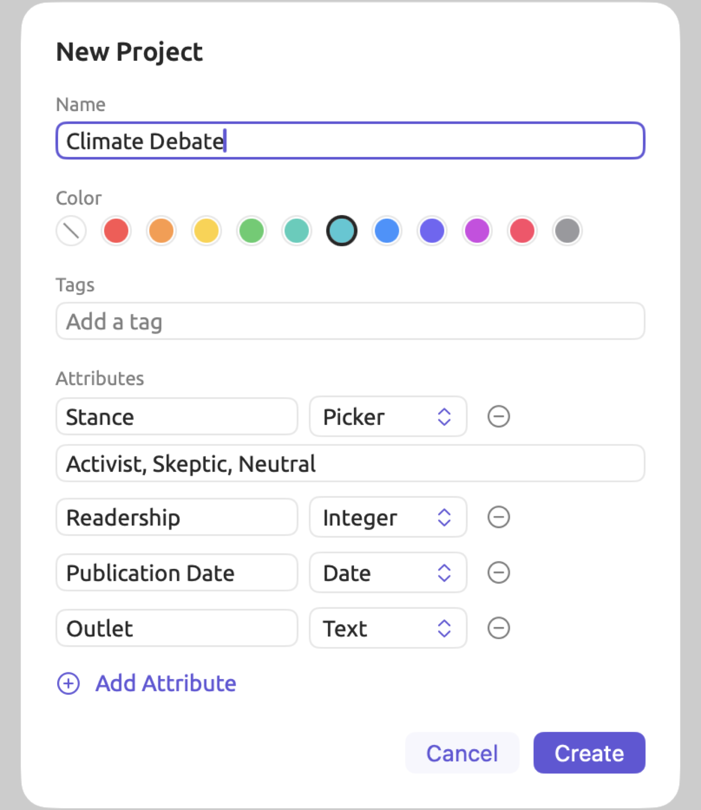
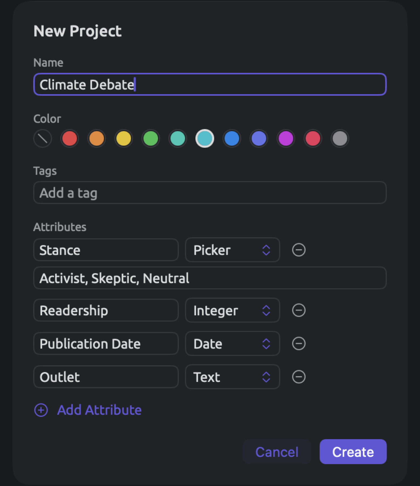
For creating a project:
- Choose File ▸ New Project (⇧⌘N).
- In Name, type the project’s name. If you leave the field empty, the project is called “New Project”.
- Under Color, click a color if you want one. It tints the project’s icon in the sidebar.
- Under Tags, type a tag and press Return or type a comma. Tags come from one list that all your projects share.
- Under Attributes, click Add Attribute once for each attribute. In the new row, type the name in the left field and choose a type from the menu. For a Picker (a fixed list of choices), type each choice in its own row below the name and type; Add Choice adds a row.
- Click Create.
The new project appears in the sidebar under Projects, and becomes the active project immediately thereafter.
To switch between projects, select one under Projects. At the top of the sidebar is Favorites, which lists projects you want to easily access. Add a project to Favorites by hovering the mouse pointer over it, then clicking on the star that appears. Right-clicking on a project gives options such as Rename, Properties, and Attributes, among others. Chapter 3, Projects and Documents describes them all.
Importing documents
LemmaLoom supports importing four kinds of sources:
- plain-text files,
- PDF files,
- audio and video files, and
- web pages via File ▸ Import ▸ Web Pages (⌥⇧⌘I).
For the sample project “Climate Debate”, all four types are represented. Op-eds, columns, blog posts, and a speech were imported as plain text sources, while “Heat Wave Report 2024” was imported from a PDF file. “Radio Debate” was imported from an audio file, while “Carbon Tax Debate” was imported as a web page. All imported documents include their publication dates and values for the attributes defined in the project. An example of such metadata for “Running Out of Time” is that it was published on August 21, 2024. It is assigned a “Stance” value of “Activist”. Its “Readership” is 412,000, and the document belongs to the group “Print”.
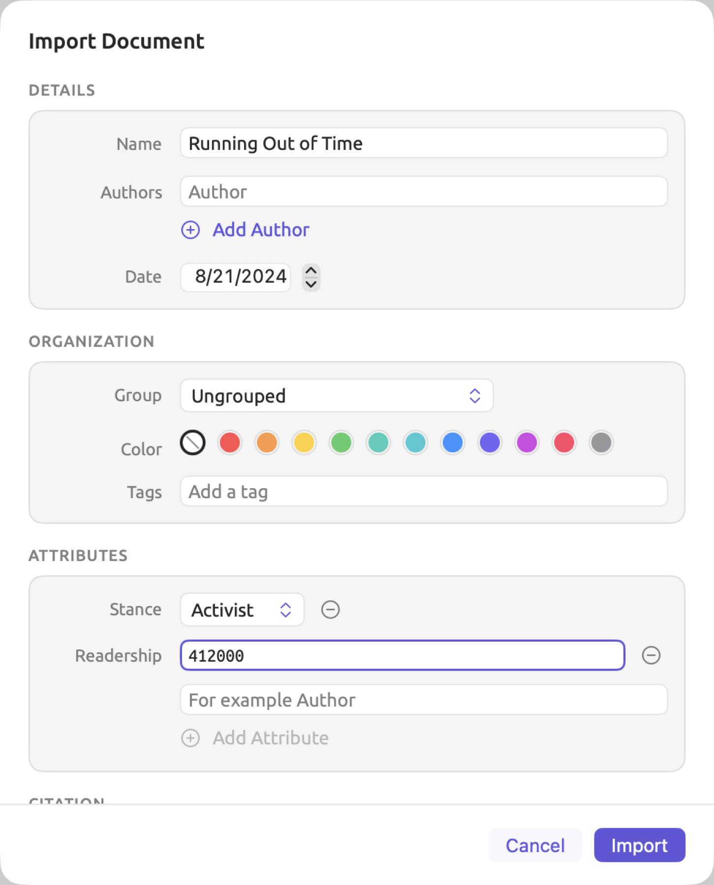
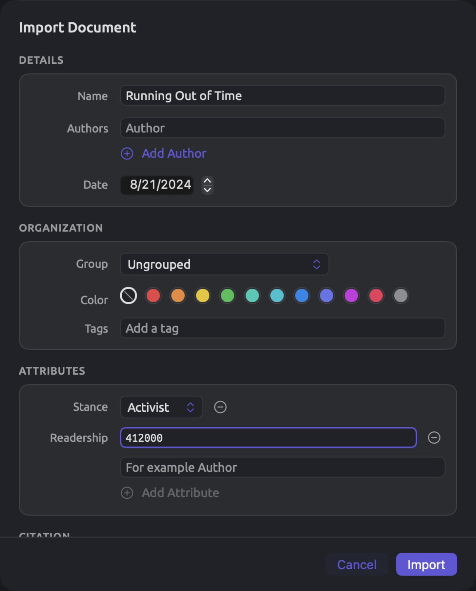
For importing a text file:
- Make sure the project you want is active (its name is bold under Projects).
- Choose File ▸ Import ▸ Documents (⇧⌘I).
- Select the file and click Open. You can select several files at once.
- The Import Document dialog opens. Check the details described below and click Import.
Organization allows you to assign the document to a Group in the project or leave it Ungrouped, assign the document a Color, and add Tags. A group behaves much like a folder in the navigation sidebar; it groups documents of a similar kind, much like “Print” and “Online” do in “Climate Debate”. While a document may belong to many sets simultaneously, it belongs to one and only one group (unless it’s ungrouped). Groups are meant primarily as organizational aids in the navigation sidebar, where sets and smart sets instead have functions in analysis.
Under Attributes, you fill in the actual values of the document for the various attributes defined in the project. As you begin typing an attribute’s name, a list of suggestions appears with the names of existing attributes followed by their type (“Stance · Picker”). Click Add Attribute, then choose or type the value in the row that appears.
Alternatively, you can simply create a new attribute. You do that by simply entering its name as long as it’s not taken, and a menu opens up beside the name to let you define the type of the attribute. For pickers, type each option in its own row. Another alternative is to leave the values for later and fill them in for many documents at once; you can alternatively complete that task document by document in the Details facet of the Text tab later. More on that topic can be found under Filling in attribute values below.
Indexing determines whether and how this particular document is indexed. The default setting for Language is Automatic; the program tries to guess the language based on the document contents. If there might be issues with accuracy, you can manually set Language to English, German, or Chinese. A very small text containing another language is an example case where it might help.
Index for grammar analysis starts checked; uncheck it if the document needs reading or coding alone and not indexing. You can also defer indexing a large document until later. The button Index Now in the status bar at the bottom of the reader starts indexing later when pressed. Further down, under Analyzers, are checkboxes to enable specific analyses; these include the built-in Cohesion, Metadiscourse, and Rhetoric analyzers plus any you’ve written yourself, and all of them are selected initially. Unselecting a box will disable that analyzer for that document.
Exclude from indexing contains regular expression patterns to match text that mustn’t count toward analysis. Speaker labels and time stamps are the most common examples. You’ll typically require it when working with transcripts. Chapter 4, Importing Material lists some common examples of patterns to exclude. Regular expressions are a special syntax describing types of texts. An example of it is \[\d+:\d+:\d+\]; that pattern refers to sequences of three numbers separated by colons within square brackets, e.g., [00:12:31]. Enter the pattern yourself and click Add, or select one from Presets, which provides Timestamps [hh:mm:ss] (this same pattern) among others. The matched texts will remain visible in the reader, although they won’t contribute toward analysis, and they can still be coded.


When importing multiple files at once, the dialog pops up once for each file, and indicates the order in the upper-right corner (e.g., 2 of 10). Skip advances to the next file without importing the current file, while Cancel terminates importation of all remaining unconfirmed files. Any confirmed file continues to get imported regardless of cancellation.
After the import
Under the Documents heading of the sidebar, your document will be found; the name of your document will also be followed by the code of the detected or selected language, for instance, EN. While being indexed, the title becomes grayed out and is accompanied by an indicator which fills itself up during the process. Once indexing completes, the indicator disappears.
Activity (Window ▸ Activity, ⌥⌘0) monitors activity in all your projects and categorizes documents according to their status into the lists for Importing, Translating, Indexing, Failed, and Waiting. Next to the projects menu in the Activity window, there is an Import menu which allows importing documents or web pages into your projects.


By clicking on the document’s row in the sidebar, you’ll be able to get a separate tab opened for this particular document. Even without indexing, you can see its text in the reader, but until indexing has finished:
- the lens menu in the title band is disabled, showing a tooltip saying Lenses become available when indexing completes;
- the Grammar tab and the Sketch Space facet of the Multimode tab of the inspector display Grammar becomes available when indexing completes;
- Statistics become available when indexing completes replaces actual statistics on the Text tab;
- the status bar below the reader shows the current stage, for example Parsing structure, and a percentage.
When LemmaLoom can’t index the document’s language, a question mark icon is shown beside the document’s title in the sidebar. The status bar displays, for instance, No grammar analysis for French.
A tour of the main window
The main window has the navigation sidebar on its left side, followed by the reading area, followed by the inspector on its right. In the navigation sidebar, you will be able to choose which project to open and access its documents, sets, and detail views. On top of the reading area is a row of tabs, and above them, the title band, which holds the controls for the document in the active tab. Within the reading area, the reader shows the contents of the active tab, either the document itself or a detail view. At the bottom is the status bar, which shows the position of the selected text and the size of the document. And finally, the inspector describes the active document, offering further inspection tools on it.
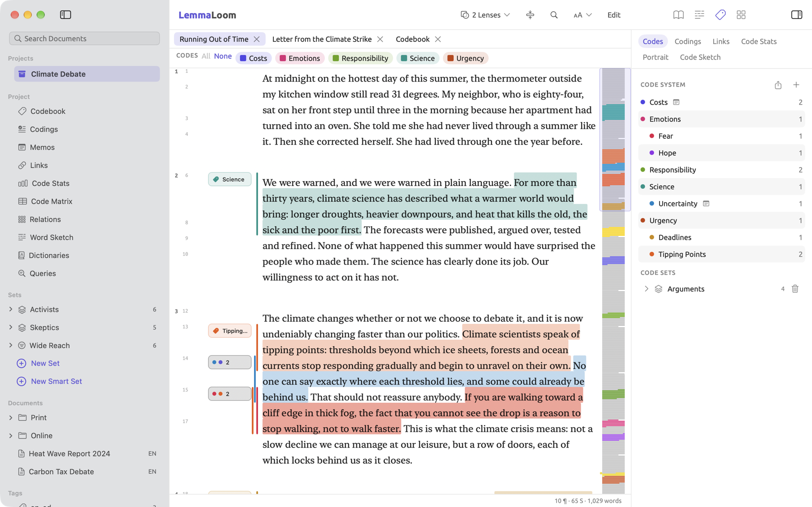
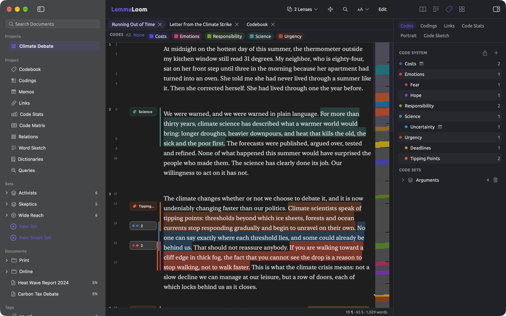
Some buttons may appear disabled here. These buttons do not apply to the currently selected document/tab, or are not available for it yet. Hovering the mouse pointer over one provides the reason it is disabled.
The navigation sidebar
Search Documents is located above the rest of the navigation sidebar and below the window buttons. Typing text in the field will narrow the sidebar to the active project’s documents whose titles contain the entered text. Hitting Return will open the very first match, while Esc will reset the field. Edit ▸ Find Document (⇧⌘F) focuses the Search Documents field. Should your sidebar be collapsed, the command will expand the sidebar first.
Below Search Documents resides a list in sections. First in this list comes Favorites. As soon as you star your first project, it appears, populated with each starred project. Below Favorites, you have access to all the projects inside your library under Projects. Clicking a project makes it active, and Project lists ten sections of the active project. These sections range from Codebook and Codings down to Queries, each opening as a detail view in a tab of the reader, and together they make up the project shelf; refer to The project shelf below to get a closer look.
Sets contains all sets created in the active project. Each set shows its name and document count. Clicking a set’s name opens it in a tab. Hitting its disclosure triangle will reveal all members inside the set. New Set and New Smart Set at the end of this section provide ways to create sets. Documents contains the documents within the active project. Groups appear as folders first, and then the remaining documents follow. Each translation is shown under its original document. At the bottom, Tags contains all the tags you assigned to this project’s documents, and the number of documents assigned each tag follows. Unless at least one document carries a tag, this section won’t show itself at all. Click a tag to open its documents in a tab, much like a set.
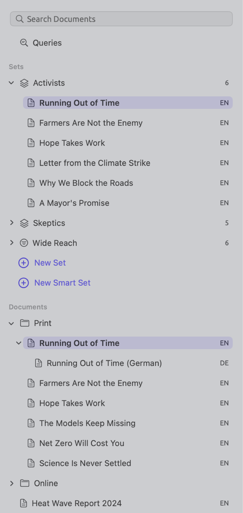
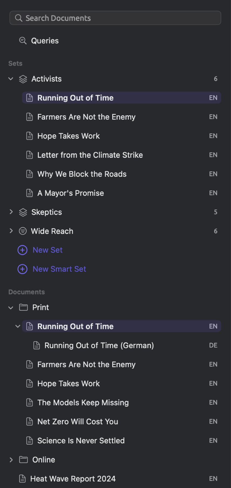
In each document row, there is an icon showing what sort of document it is. The document’s icon is tinted according to the document’s color, should it have one. Next is the document’s title, followed by the language code, and then an indexing badge whenever necessary. Should your lens or query miss out on including a particular document, check whether that document has a badge. A row with no badge has been indexed. The badges indicate the following:
| Badge | Meaning |
|---|---|
| Progress ring | Being indexed; hover the mouse pointer over it for the stage and percentage |
| Dotted circle | Waiting to be indexed |
| Pause symbol | Indexing is off for this document |
| Question mark | Language not supported for indexing |
| Red triangle | Indexing failed; right-click the document and choose Retry Indexing |
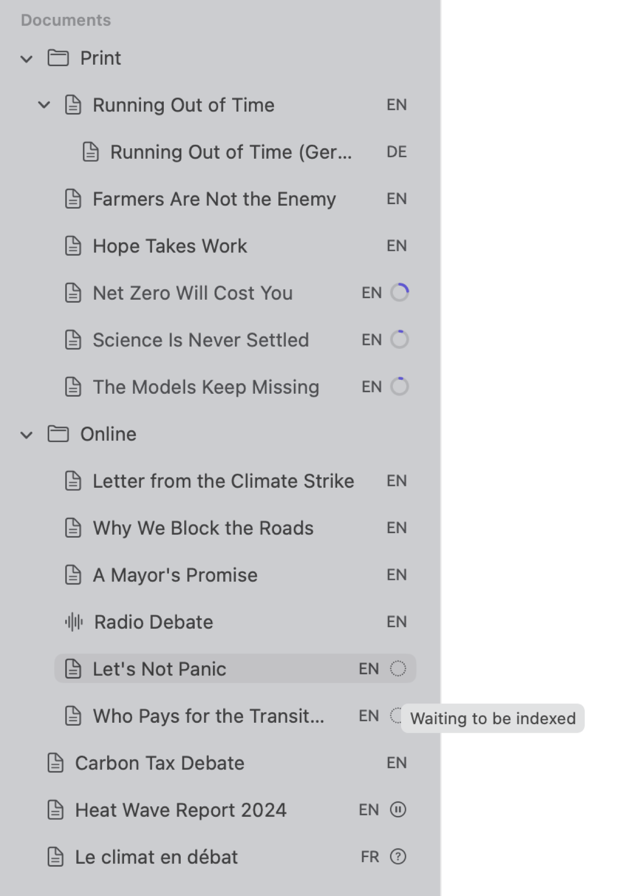
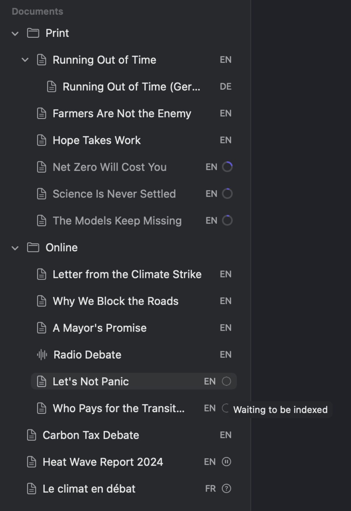
To open a document, simply click on it in the navigation sidebar. To navigate using your keyboard keys, use ↑ and ↓ to navigate rows, and Return to open the currently highlighted row. Select multiple rows by holding ⌘ or ⇧ while clicking. Right-clicking a document in the sidebar gives access to contextual commands related to that row, including Open in Split View, Rename, Move to Group, Sets, Properties, Translate, Export, and Delete Document. If multiple rows are selected, there will be contextual commands for adding them into a set (Add to Set) or deleting the selected documents (Delete Documents).
In the Project menu in the menu bar, there will be several of the commands from above for actions performed on whatever row is currently selected in the sidebar. The Project menu adds commands for making new sets (New Set) and smart sets (New Smart Set), as well as adding codes (Add Code). Its delete command (⌘⌫) will delete whatever project, set, group, or documents are selected.
The project shelf
Everything accessed through Project has its own detail view opened in a tab. The detail view contains information for the entire project. Using the project shelf allows you to interact with all your documents simultaneously.
| Section | What it shows | Described in |
|---|---|---|
| Codebook | The project’s codes as a tree, where you create, edit, and organize them | Chapter 7, Coding |
| Codings | Every coded passage in the project, with its document and code | Chapter 13, Analyzing Codes |
| Memos | The project’s memos | Chapter 7, Coding |
| Links | Links between passages | Chapter 7, Coding |
| Code Stats | How often each code is used and how much text it covers | Chapter 13, Analyzing Codes |
| Code Matrix | A table of codes against documents or groups of documents | Chapter 13, Analyzing Codes |
| Relations | A table of how often each pair of codes occurs together | Chapter 13, Analyzing Codes |
| Word Sketch | The words a word combines with grammatically, for example the nouns climate modifies in climate crisis and climate policy, across the project | Chapter 12, Word Sketch |
| Dictionaries | Word lists with categories, for example a list of hedges | Chapter 19, Dictionaries |
| Queries | The query builder, run over the whole project | Chapter 15, Building a Query |
When working with a particular part of a project, open a set. Its tab will give you access to all the same ten sections within the set, and not the entire project. The row of buttons at the top gives you quick navigation to each section in this way. In narrower windows, this row converts into a menu that displays the currently selected section’s name as its title.
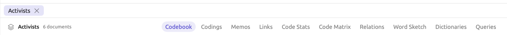
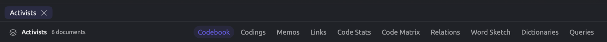
A detail view’s header is just a single row. The name of the section appears on the left side while tools related to that section are displayed on the right, such as a search field. You may keep a detail view alongside your document using the Open in a window button. This button appears on the far right of the header. Window ▸ Codebook and Window ▸ Queries provide you access to the respective sections in their own windows. Project ▸ Open gives you access to any section on the shelf in a separate tab.
Document tabs
Each document, detail view, or set opened has its own tab in the row above the reader. An × on the tab closes that particular tab.
For a quick look, you can open a preview tab by clicking a hit in the results of your queries, or an example from a word sketch. The titles of preview tabs are italicized. The following quick look replaces this preview tab automatically. If you wish to preserve the preview tab, click the tab itself.
| Command | Shortcut |
|---|---|
| File ▸ Close Tab | ⌘W |
| Window ▸ Show Previous Tab | ⇧⌘[ |
| Window ▸ Show Next Tab | ⇧⌘] |
Right-clicking on a tab provides options to open a document either in a new window (Open in New Window) or in split view (Open in Split View). Split view displays the selected document alongside the currently active document. Use it if you wish to compare two documents side-by-side, or if you wish to read a translation alongside its source document. Chapter 9, Translations and Split View describes it further. The Window menu provides the same options.
The reader
The reader displays the active tab’s document in text format. To the left of the text lies the gutter. It shows paragraph numbers, sentence numbers, and colored bars next to each coded passage. Clicking on a paragraph number selects the entire paragraph, clicking a sentence number does the same for the sentence, and clicking a passage bar selects the passage itself.
The document overview is located alongside the right edge of the reader. Like a color-coded scroll bar, the document overview indicates the current location in the document, but unlike a scroll bar, it also indicates where the enabled lenses, bookmarks, and search hits fall. Clicking or dragging anywhere in the document overview scrolls you directly to that part of the document, while hovering the mouse pointer over it previews the text at that point.
Selection can either be done by clicking and dragging over a passage of any length or by clicking a word. Within an indexed document, simply clicking on a word selects just the clicked word. The inspector’s Grammar tab will display grammar details about that word. If you click the same word again, your selection is cleared. When working in the transcript of a recording, clicking a word moves playback to the point in the file where that word resides.
The selection bar appears at the bottom of the reader as long as something remains selected in your document. The beginning of your selected text appears in quotes at the far left, followed by Bookmark, Code, Add to Dictionary, Memo, and Link. Only projects with a dictionary show Add to Dictionary. Application of codes will be discussed in detail in Applying codes later in this chapter. In the Document menu you can also find the Bookmark (⇧⌘B), Code (⇧⌘C), Memo (⇧⌘M), and Link (⇧⌘L) commands. Pressing Esc or clicking the × in the selection bar will clear the selection.
The status bar is found along the bottom of the reader. On the left it shows the position of the selected text. If you select a word, it reads something like ¶ 4 · S 17 · T 3, indicating that it’s paragraph 4, the document’s sentence 17, and the third token therein (punctuation included in counting tokens). If you select a passage, the status bar displays the number of tokens within it, as well as its start and end. On the right side, it displays overall document size by paragraphs, sentences, and words; though, while indexing takes place, it displays indexing progress instead.
The title band
The title band spans the top of the reading area at the same level as the window’s buttons. On the left-hand side, it displays the LemmaLoom name. Controls related to the document being viewed in the currently active tab sit on the right-hand side; from left to right, they include:
- Lens menu. This control displays Lens when no lenses are enabled; when one lens is enabled, it displays the name of that lens; when multiple lenses are enabled, it displays how many lenses there are, for example 2 Lenses. While reading your document, a lens helps highlight patterns found in it. A lens either highlights the text based on word class or another property, or based on your own annotations. Prior to indexing a document, the lens control is disabled. Chapter 6, Lenses covers more on lenses.
- Collapse button, which has a tooltip of Show only the sentences a lens annotates. When clicked, this button will hide everything apart from the sentences that the currently enabled lenses have annotated in your document. The button is visible only if your document is indexed and a lens is capable of annotating some portion of text, that is, an enabled lens besides Codes and Bookmarks. It also appears when some codings or bookmarks exist that can be shown via the Codes and Bookmarks lenses. Upon clicking the button once again, your full document returns, and the button’s tooltip changes to Show the whole document again.
- Magnifier icon, with a tooltip of Find in document. When clicked, this icon opens a search bar directly above your document’s text. Alternatively, Edit ▸ Find (⌘F) does the same action. Find Next (⌘G) and Find Previous (⇧⌘G) move through your results sequentially.
- Font, gutter, and text size, the control featuring large and small A symbols. Its drop-down menu consists of Font, Gutter (Off, Paragraphs, Sentences, or Both), Layout (Single Column or Two-Page Spread), Larger Text (⌘+), Smaller Text (⌘−), and Reset Text Size (⌘0).
- Edit, switching the reader interface mode to editing the current document’s text content. Cancel and Save buttons replace it until editing ends. Chapter 5, Reading and Editing describes editing.
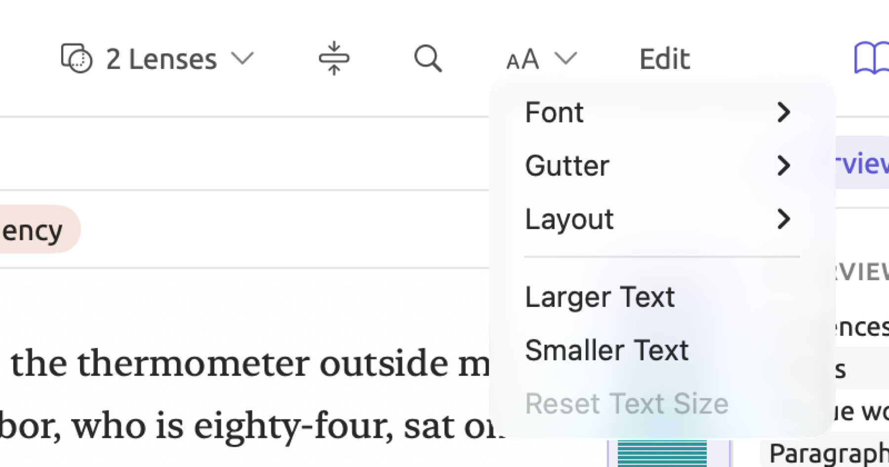
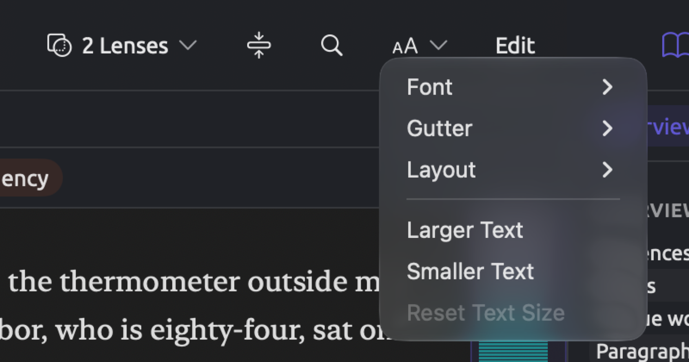
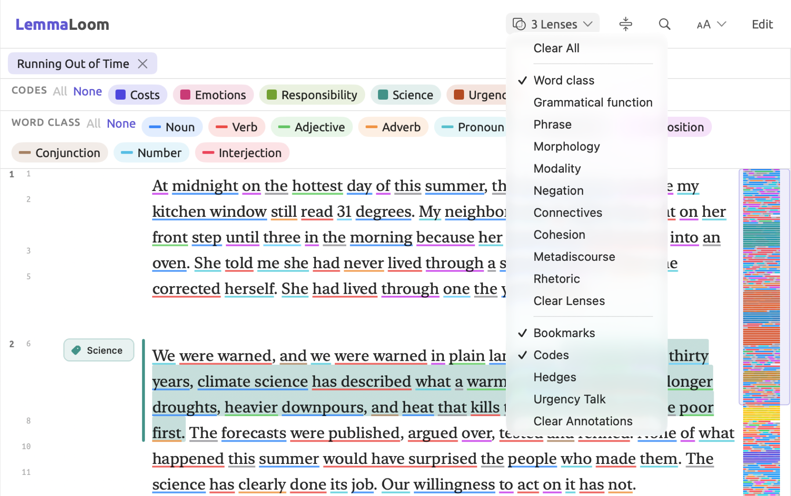
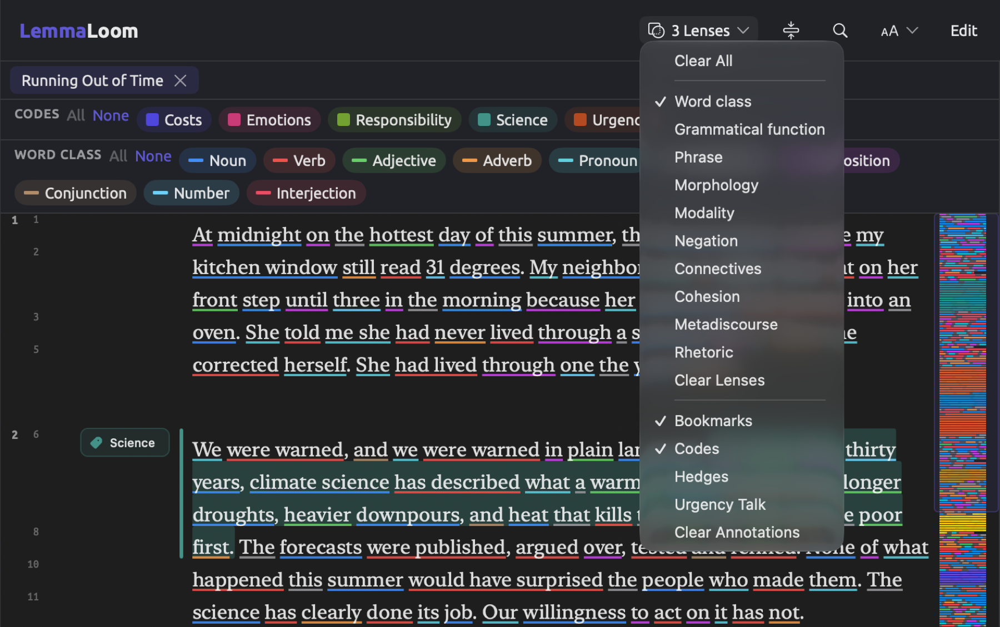
Every new document has two lenses enabled, Codes and Bookmarks, both of which display codings/bookmarks as annotations on your text. Hence the label shows 2 Lenses in documents whose lenses have not been modified from default settings.
The lens menu groups its lenses. The first group holds the grammar analysis lenses, which are Word class, Grammatical function, and all other options available for the language of the document. Next comes Clear Lenses, which clears out those lenses listed above and any query lenses. Then come your own analyzers and Clear Analyzers before ending with Bookmarks, Codes, the project’s dictionaries and query lenses, and Clear Annotations, which disables that last group. Clicking on each one of these enables/disables them accordingly.
All lenses display their legend in a line on top of the document, where a series of aspect lenslets appear in the form of colors. Clicking a lenslet disables or enables its aspect. At the beginning of the legend appears the name of the lens itself, along with the options of enabling/disabling all aspects via clicking on All or None, respectively. There could be multiple colors in a single lens, and you may want to show just one of them. Right-click on the required lenslet and choose Enable only this for that purpose.


The inspector
The inspector applies to the document currently displayed in the active tab. It allows you to look more closely at the document you are working with. Four icons at its top represent each tab individually. The book represents Text and the line of spaced words represents Grammar. The tag represents Coding and the four squares represent Multimode. Hover your mouse pointer over an icon to reveal its name, or use the View ▸ Inspector menu item and its various keyboard shortcuts.
Each tab is subdivided into a number of facets. Chapter 10, The Text Inspector, Chapter 11, The Grammar Inspector, Chapter 13, Analyzing Codes, and Chapter 14, Sketch Space will explain each facet individually. Navigate among facets via the row of buttons under the icons above.
| Tab | Shortcut | Facets | What it is for |
|---|---|---|---|
| Text | ⌥⌘1 | Overview, Details, Bookmarks | The document’s statistics, for example word counts and readability; its attributes and tags; its bookmarks |
| Grammar | ⌥⌘2 | Grammar, Sentence, Structure, Form × Function, Collocates, Word Sketch, Discourse | The grammar of the selected word or sentence and the grammatical patterns of the whole document |
| Coding | ⌥⌘3 | Codes, Codings, Links, Code Stats, Portrait, Code Sketch | The code system, this document’s codings and links, and statistics about them |
| Multimode | ⌥⌘4 | Sketch Space, Query | Comparisons of a word’s use across codes or attribute values, and queries run on this document |
The Grammar facet works on the currently selected word. The Sentence facet works on the currently selected sentence. Prior to selection, they display Select a Word and Select a Sentence, respectively.
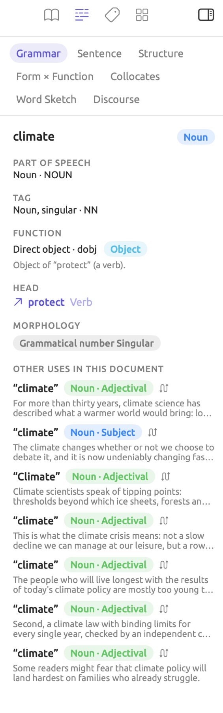
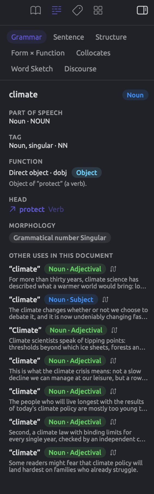
The inspector tab, facet, and pane width are saved separately for each document. If the active tab contains a detail view or a set, the inspector closes. Their tools appear in the reading area instead. If you open a document in another window, that window will have its own inspector.
Arranging the window
For reading documents alone, hiding the side panels lets you use the full window space. Both the navigation sidebar button and the inspector button are found on the top window toolbar. The navigation sidebar button is located immediately beside the window buttons in the upper left corner. The inspector button is in the upper right. The View menu contains the equivalent commands:
| Command | Shortcut |
|---|---|
| View ▸ Toggle Sidebar | ⌃⌘S |
| View ▸ Toggle Inspector | ⌃⌘I |
Dragging the line between the reader and the sidebar or the inspector allows adjusting the width of either element. The inspector can fill as much as two-thirds of the window. This provides space for displaying a broad table or a long sentence diagram. Whether the inspector was hidden is remembered separately for each document. Tabs of detail views and sets display their tools in the reading area and therefore disable the inspector button and View ▸ Toggle Inspector.
Applying codes
The coding process entails two phases, creating your codes and applying them to passages. Codes may be defined using the inspector’s Codes facet, or via the Codebook. Applying codes to passages happens using the code palette.
Creating a code
There are five top-level theme codes within the codebook of the “Climate Debate” project. They each relate to one of the themes investigated by this research study, which are “Costs”, “Emotions”, “Responsibility”, “Science”, and “Urgency”. Some of these codes contain subcodes that describe the various ways the related theme appears in the texts. Examples include “Tipping Points” and “Deadlines” for the code “Urgency”, and “Fear” and “Hope” for the code “Emotions”. There is also a sixth top-level code, “Speakers”, which contains the three speakers in “Radio Debate”, namely “Host”, “Activist”, and “Skeptic”.
Here’s how you can create a new code:
- Open a document.
- In the inspector, click the Coding tab (⌥⌘3) and then Codes.
- Click + at the right of Code System.
- In the New Code dialog, type the name in Name.
- Click a color under Color. Codes without a color are rendered in the theme’s accent color. Pick one if you plan to use several codes.
- Leave Format at Highlight and Scope at Project, and click Save.
Beyond these fields, the dialog also includes others; Chapter 7, Coding covers every available option in this regard. The Format field may contain an Underline or Boxed style. Scope may limit the code to apply only within one Document set or one Document. Tags applies labels to your codes. Via Attributes, individual codings of each code can be assigned individualized values. The About description defines the meaning of each code and provides guidelines on when it should be applied.
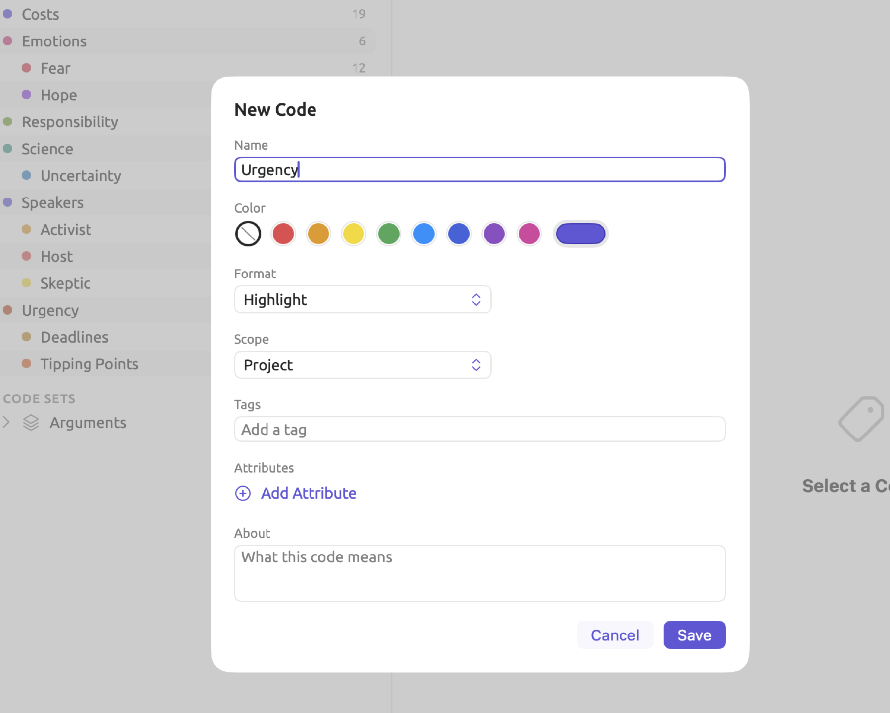

Creating subcodes breaks down general themes into subthemes that take various forms within your dataset. Right-click on any code in the Codes list, then click Add Subcode to generate your subcodes.
Codes will show up again in the Codebook section of the project shelf. The Add Code button found at the bottom of the list there adds more codes. Codes can also be created via Project ▸ Add Code within the menu bar; it opens the same New Code dialog.
Coding a passage
The fourth paragraph of “Running Out of Time” names three targets, “Net zero by 2050. Coal gone by the end of the decade. Emissions halved by 2030.” All of these deadlines refer to particular dates by which certain actions must be undertaken, hence their code “Deadlines”. The figure below shows a later sentence found within the same paragraph, selected with the code palette open. This particular sentence says, “A deadline that falls after everyone in office has retired is not a deadline at all.”
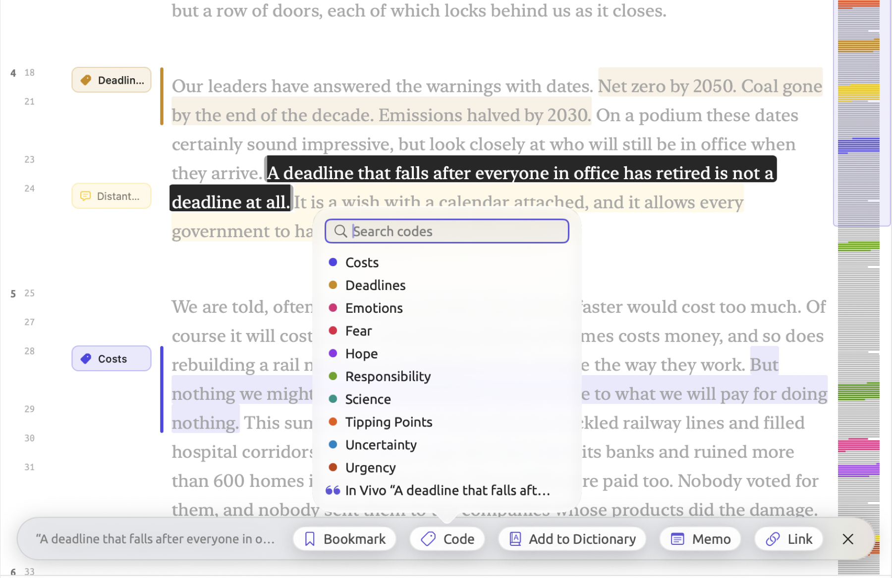
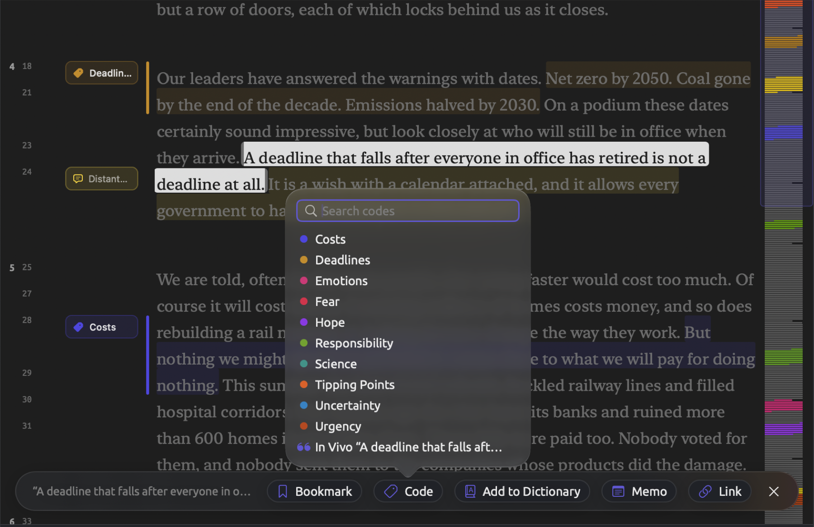
To code a passage:
- In the reader, select the passage you want to code. To code a whole paragraph or sentence, click its number in the gutter instead.
- In the selection bar at the bottom of the reader, click Code, or choose Document ▸ Code (⇧⌘C).
- In the palette, click the code.
Once a code is applied to a passage, the passage adopts the color of the chosen code. A matching bar is displayed next to it within the document gutter. Within the Codes facet, the number next to the code increases by one. The palette remains open until you hit Esc; multiple codes may be assigned to a single passage.
Upon the palette’s opening, the Search codes field receives focus automatically. Inputting parts of names searches among existing codes for matching results. Hitting Return assigns the first match found; if the code is already applied to the passage, hitting Return removes the coding from it. Use the arrow keys (↑ and ↓) to navigate through the matches prior to Return if you wish to assign something else. When no code has the typed name, Add Code “…” pops into existence; upon choosing it, a new code of the name specified will be created and applied.
The last item on this list is In Vivo “…”. Instead of adding a predefined code, this option creates an ad hoc code, which is applied immediately afterward. Such a code is named after the actual contents of the selection. Without opening the palette, Document ▸ In Vivo Code (⇧⌘V) offers the same function.
If you are coding a single word within an indexed document, simply click that word to select it. From there, click Code in the selection bar and select the desired code from the palette.
Removing a code from a passage works much like applying one. Clicking the passage’s bar in the gutter is one way to select it once again; from there, open the palette. Codes already on the passage possess an icon of a checkmark; clicking one removes all codings of that code overlapping the current selection.
Should you regret your coding choice, Edit ▸ Undo Apply Code (⌘Z) retracts the last performed action. For removing a code from a passage, this action is titled Undo Delete Coding instead. ⇧⌘Z acts as redo in both cases. More information about available undo and redo actions may be found in Chapter 23, Undo and Redo.
Codes may themselves contain attributes. Prior to assigning an attribute-based code to a passage, a small dialog asks for the values of those attributes. Chapter 7, Coding explains how to code passages based on codes containing attributes. Additionally, that chapter talks about memos, links, and bookmarks.
Where work is stored
In most cases, LemmaLoom will save your changes automatically. There are two cases where you must manually save a change made in LemmaLoom though (saving queries and editing text in documents). When editing a document’s text, you must explicitly hit the Save button to make sure that LemmaLoom saves the change. In addition to this, unsaved queries will be lost once you quit the LemmaLoom application.
The library holding everything is a folder named LemmaLoom.lemmadb, in the application’s container inside your user Library:
~/Library/Containers/app.LemmaLoom/Data/Documents/LemmaLoom.lemmadb
The Finder hides the Library folder in your home folder. To get there, choose Go ▸ Go to Folder… (⇧⌘G) in the Finder and paste the path.
All your work in LemmaLoom resides inside a single library. This includes everything such as documents, projects, indexing results, codes, codings, memos, links, bookmarks, sets, groups, attributes, dictionaries, saved queries, and your own analyzers. For each imported PDF document, the library stores text content only and retains its filename. For each imported web page document, LemmaLoom retains its text content only and retains its URL address. For imported audio and video recordings, LemmaLoom retains both the transcript and a copy of the file itself. Finally, your favorite projects, tabs open in each project, and locations in each document will be stored in the library. Your settings in LemmaLoom’s Settings window are kept on the Mac, as detailed in Where settings are stored in Chapter 24, Settings and Appearance.
If you want to move a project to another machine or simply back up your project somewhere else, LemmaLoom offers options to exchange and export projects (see Chapter 22, Exchanging and Exporting). LemmaLoom’s File ▸ Export ▸ LemmaLoom Project will export your project as a .llz compressed archive containing documents, their codings, and indexing, along with any attached audio/video recordings; the archive keeps everything. File ▸ Import ▸ LemmaLoom Archive will import such archives back to your LemmaLoom. File ▸ Export ▸ REFI-QDA Project exports your project to the REFI-QDA interchange format; software which adheres to this specification can open this type of file. This format is best suited for projects intended to leave LemmaLoom and be opened in compatible software instead.
You can manually copy your LemmaLoom library folder for backup or relocation purposes. First, quit LemmaLoom. Next, copy the entire LemmaLoom.lemmadb folder.
Privacy
Help ▸ Send Feedback opens a window where you write your message. Once you finish, clicking Compose Email passes the message to your email client as a new email. You can edit the message before sending once it arrives in your email client. Include system information is initially selected; the option includes your versions of LemmaLoom and macOS, the name of the processor type, RAM size, and the interface language used by LemmaLoom. What is written beneath the option specifies what gets included.


LemmaLoom exports the full content of every document in a .llz archive file or REFI-QDA project.
From import to a first analysis
Analysis begins by bringing your texts into LemmaLoom and describing certain properties of these texts. Afterward, your texts are divided into sets and coded; differences between these sets will be analyzed. The final product of this particular analysis of “Climate Debate” is an identification of words which distinguish the activists’ texts from the skeptics’.
Importing many texts
There are eleven commentary texts in the “Climate Debate” project. Six were written by the activists and include “Letter from the Climate Strike”, while the other five were written by the skeptics, including “Net Zero Will Cost You”. In order to keep these separate, two different sets are employed along with the attribute “Stance”.
When importing multiple texts:
- Choose File ▸ Import ▸ Documents (⇧⌘I).
- Select all the files and click Open.
- The Import Document dialog appears once for each file. Its position shows at the top right, for example 1 of 10. Check each dialog and click Import.
Attribute values can be filled out on each dialog. Alternatively, you may use the attributes table to assign a shared attribute value across multiple documents. See Filling in attribute values below for instructions. You can follow the indexing progress by going to Window ▸ Activity (⌥⌘0) or by watching the progress rings in the sidebar. Aside from creating a list of keywords, the steps below do not require indexing. See Comparing two sets with keywords below.
Filling in attribute values
In the project “Climate Debate”, all four attributes hold a value in each document. For instance, in all six documents by the activists, “Stance” has the value “Activist”. Choosing just one Set Value ▸ Stance in the attributes table suffices to assign that value to all six. Other values vary among the documents, like their readerships; you would enter them individually in the table.


For bulk assignment of values:
- Choose Project ▸ Attributes, or right-click the project under Projects and choose Attributes. The attributes table opens in a window of its own.
- In the table, check the boxes beside the documents that share a value.
- Choose Set Value and then the attribute, pick or type the value in the dialog that opens, and click Apply.
- Uncheck those documents, check the ones that share the next value, and set it the same way.
- For values that differ from one document to the next, type each value in the attribute’s column.
Making sets
A set refers to a collection of documents assigned a name. Sets are the normal approach for letting LemmaLoom know which documents your analysis should consider. The “Climate Debate” project contains the sets “Activists” and “Skeptics”. Each set contains the writings of one faction. Your query could compare the sets, or you can conduct queries within them individually. Smart sets have conditions. If a document meets certain conditions, LemmaLoom will automatically add the document to the smart set. Documents with a “Readership” attribute value greater than or equal to 100,000 belong to the smart set “Wide Reach”, for instance. More information about sets in general (including smart sets), groups, tags, and attributes can be found in Chapter 8, Sets, Groups, Tags, and Attributes.
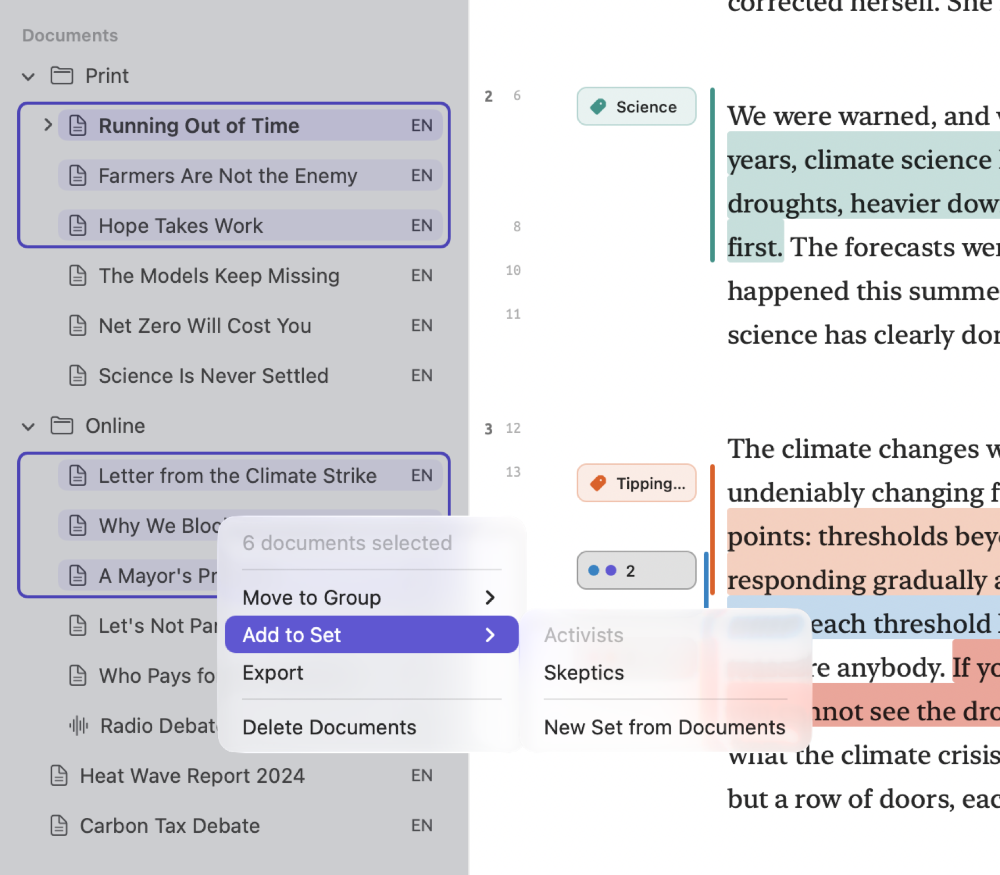
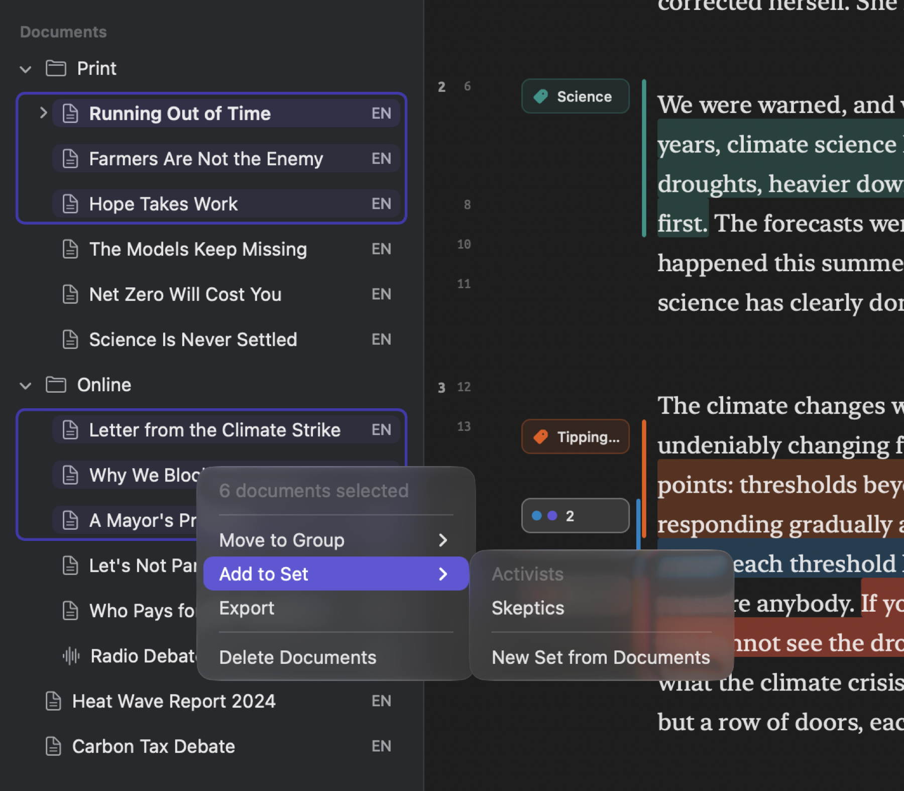
To create a set containing documents:
- In the Documents section of the sidebar, click the first document, then ⌘-click the others.
- Right-click one of the selected documents and choose Add to Set ▸ New Set from Documents.
- A set called “New Set” appears under Sets with its name ready for editing. Type a name and press Return.
Coding across texts
You will code multiple texts in the exact same way that you code one text; refer back to Coding a passage from earlier in the chapter for guidance on doing that.
Looking at the coding of one text
In the “Climate Debate” project, “Running Out of Time” is coded 13 times. Two each are for “Costs”, “Responsibility”, and “Tipping Points”.
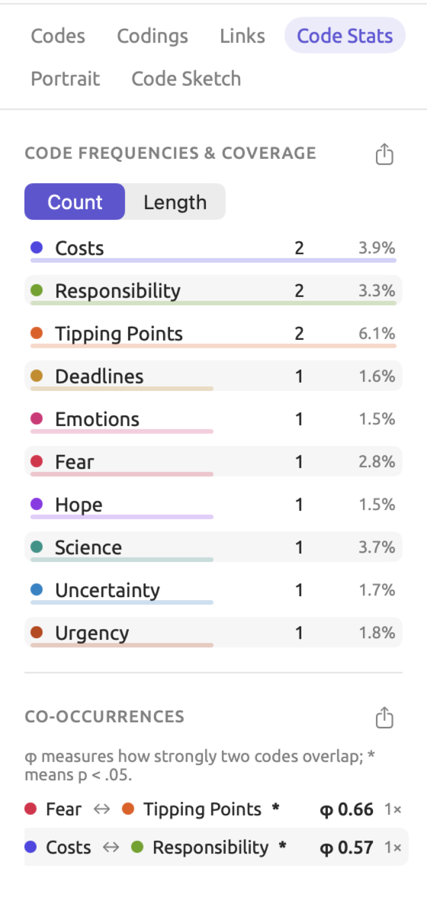
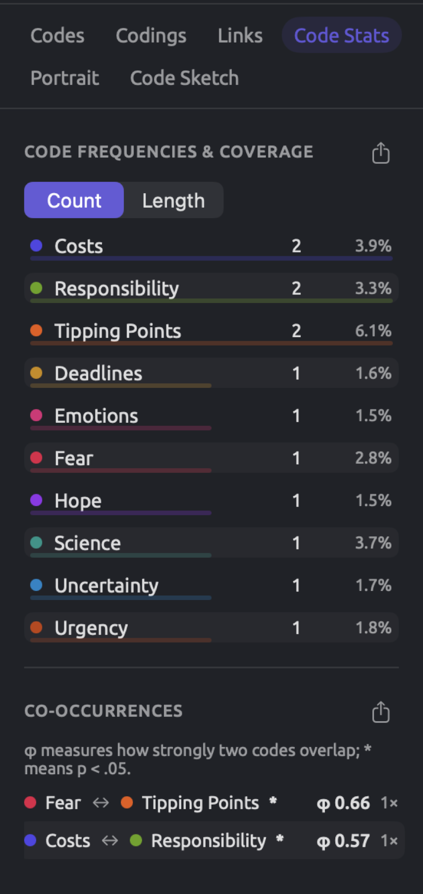
To view a document’s codes:
- Make the document active.
- Click the Coding tab of the inspector.
- Click Code Stats.
Code Frequencies & Coverage in the Code Stats facet lists all codes used in the current document, along with their frequencies and percentages. Each row tells how many passages contain the code and the percentage of the document’s text they take up, known as the code’s coverage. Clicking a row shows one of its passages in the reader. Above the list, Count sorts the codes and scales their bars by the number of passages; Length sorts and scales them by the amount of text covered. Co-occurrences below it displays co-occurrences of those codes; Chapter 13, Analyzing Codes describes it and the project-wide tables in the project shelf.
Two codes used five times each can cover very different amounts of text. Coverage shows what portion of the document the passages containing the code represent, and it is calculated using the following equation:
Here, represents the number of characters in the passages containing the code, while represents the total number of characters in the document; note that spaces and line breaks also count toward the totals. Should two passages with the same code partially overlap each other, the shared characters are accounted for once in the calculation of .
For instance, “Running Out of Time” consists of about 5,000 characters. So . Suppose three separate passages are coded as “Urgency”. The passages are 150, 100, and 200 characters in length respectively. Note that this coding of the text is hypothetical; the actual example project codes the text differently. With no overlapping passages, , and:
The “Urgency” entry reads 3 and 9.0%. If the last two passages overlap by 33 characters, then . Therefore, the coverage percent is . The row displays 8.3%. There are still three codings of “Urgency”. Codings with “Tipping Points” or “Deadlines” have rows of their own. The number of passages is summed up separately for each row and code.
Comparing two sets with keywords
A keyword list retrieves those words that are used much more or less frequently by one set of documents compared to another. The “Activists” set in “Climate Debate”, for instance, includes a saved keyword query titled “Keywords: Activists”. This keyword list compares the set with “Skeptics” and retrieves those words that differentiate the language used by the activists. Keyword lists retrieve the frequency of occurrence of words found by indexing. Documents in both sets must first be indexed.
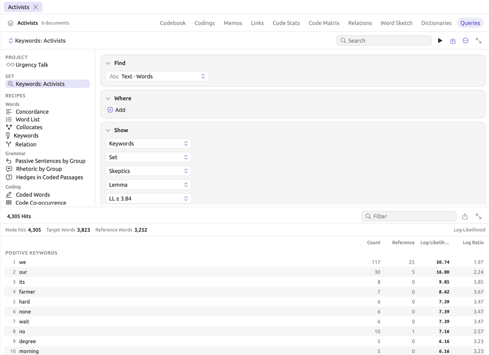
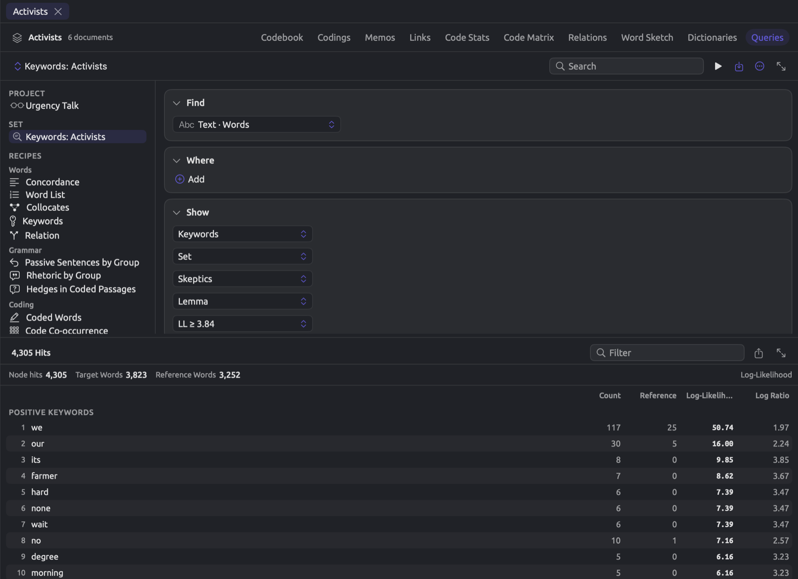
Making a list of keywords:
- Click the first set under Sets in the sidebar. The set opens in a tab.
- Click Queries in the row of buttons at the top of the tab. In a narrow window, the row is a menu; choose Queries from it.
- In the column on the left, under Recipes, click Keywords in the Words group.
- In the Show condition, open the menu showing Rest of Project and choose Set. In the menu that appears, choose the other set.
- Leave the menu showing Lemma as it is. Then cost and costs count as one word. Leave the menu showing LL ≥ 3.84 as it is.
The results of the comparison will be presented beneath the builder in two separate lists, Positive Keywords and Negative Keywords. Positive Keywords contains those words which occur more frequently in the first (target) set compared to the second (reference) set. Negative Keywords, conversely, shows the words which occur less frequently in the target set compared to the reference set. On the top of these two lists, the target set will have its total word count indicated as Target Words, while the reference set will likewise show its total word count as Reference Words. As illustrated in the figure, “Activists” is the target set, whereas “Skeptics” is the reference set. The following information is presented per row of the table:
- Count, number of occurrences in the target set;
- Reference, number of occurrences in the reference set. The scores normalize both counts;
- Log-Likelihood, strength of the evidence that the difference is not chance;
- Log Ratio, amount of difference between the two sets, measured in doublings of the word’s rate. Rate is a word’s proportion of the total number of words of its respective set. At 1, the word’s share of the target’s words is twice its share of the reference’s; at 2, it is four times as large; at −1, half as large.
Suppose money takes up 2 in every 1,000 words in the activists’ texts and 1 in every 1,000 in the skeptics’ texts. Thus, if it appears twice as frequently in the target set compared to the reference set, the word rate ratio between the target and reference set is 2. Therefore, the Log Ratio would become about 1 because the rate doubles. Base-2 logarithms count doublings by calculating the power of 2 needed to produce a number. Thus, since the ratio between the rates in the above example equals , the logarithm is 1. Conversely, a ratio of gives −1.
Chapter 16, Query Results and Statistics explains both of the scoring methods using examples and describes in detail how thresholds should be chosen. The rows are sorted according to the Log-Likelihood score. A high score shows that a difference likely arises due to reasons other than mere chance.
Should any documents remain under indexing, an additional label showing how many documents were included is displayed alongside hit counts, e.g., 4 of 6.
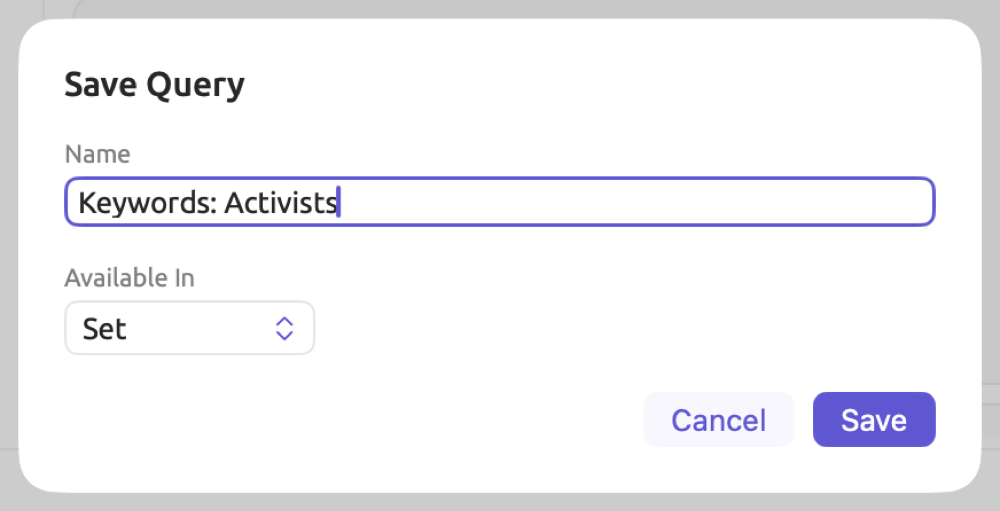
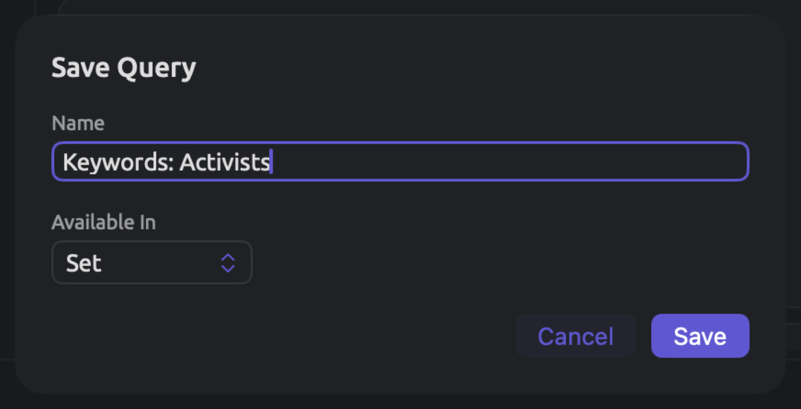
In order to preserve your query:
- Click the Save button (a square with an arrow pointing into it) and choose Save.
- Type a name and leave Available In at Set.
- Click Save.
That saved query is stored within the set.
Reading the passages behind a keyword
Farmer is listed in the activists’ keyword list within the “Climate Debate” project. Almost all mentions by the activists of the term appear within one text called “Farmers Are Not the Enemy”. The search bar takes you to each instance individually within one text:
- Open one of the texts in the set.
- Press ⌘F and type the word. The text marks the current hit, and the document overview shows all of them. The search bar shows where you are among them. It matches the letters anywhere in the text and ignores capitals. A search for
ourtherefore also finds your and fourteen. Pass over those. - Press ⌘G or Return to move to the next hit (⇧⌘G goes back), and read the passages around them.
- Code the passages that matter for your question.
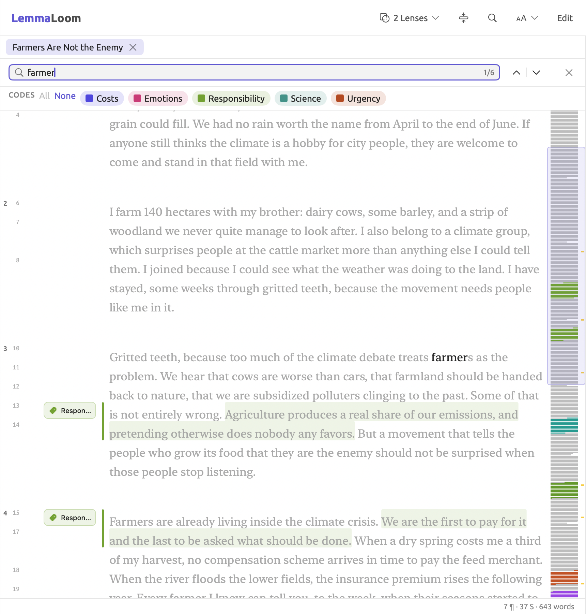
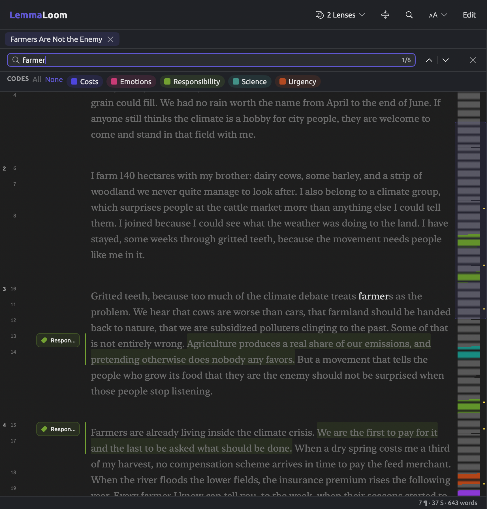
In order to find such a pattern in an entire set of documents, use the Concordance recipe in the set’s Queries section. Input the word as the lemma to get started. See Concordance in Chapter 16, Query Results and Statistics.
More on codes and coding is covered in Chapter 7, Coding and Chapter 13, Analyzing Codes. Grammar-based analyses can be conducted via Chapter 6, Lenses, Chapter 11, The Grammar Inspector, and Chapter 12, Word Sketch. Chapter 15, Building a Query explains how to construct a query.